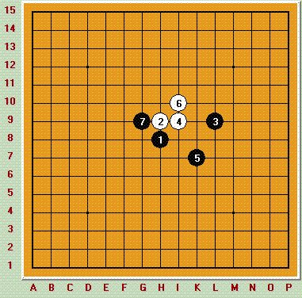

白棋能否必胜？
首页
习题专区
#1 白棋能否必胜？ 作者：wrwak 发表时间：2008-12-20 13:45:29

#2 Re:白棋能否必胜？ 作者：快乐天羽 发表时间：2008-12-21 0:08:59
白可以必胜，如图：
=======上图对应的爱五子棋谱代码如下，以便你拆解：========
h8h9k9i9j7i10g9g8j11f9f10i7i8e8
======================================================
#3 Re:白棋能否必胜？ 作者：wrwak 发表时间：2008-12-21 10:49:35
原来是走下面杀
#4 Re:白棋能否必胜？ 作者：战龙在野 发表时间：2008-12-21 11:38:21
前面不是唯一防吧？我仔细看看
#5 Re:白棋能否必胜？ 作者：战龙在野 发表时间：2008-12-21 11:53:59
不错。。这个14后面有个巧妙的杀。。强的
#6 Re:Re:白棋能否必胜？ 作者：nara 发表时间：2008-12-21 12:09:10
引用：
原文由 战龙在野 发表于 2008-12-21 11:53:59 :
不错。。这个14后面有个巧妙的杀。。强的
摆出来看看啊!还有这个7是不是唯一的强防啊?有没有其他强的点,摆出来看看啊!战龙兄!
#7 Re:白棋能否必胜？ 作者：战龙在野 发表时间：2008-12-21 20:30:22
也没什么啊。。就是15下L8，白的杀。。
#8 Re:白棋能否必胜？ 作者：歇菜了 发表时间：2008-12-21 21:17:35
哦，反4吗，战龙老师无敌了
#9 Re:白棋能否必胜？ 作者：战龙在野 发表时间：2008-12-21 22:51:30
。。无敌？那是大鱼。。我歇菜。。
#10 Re:白棋能否必胜？ 作者：手术 发表时间：2008-12-22 16:36:01
崇拜大家啊。。。都看不懂了。。。